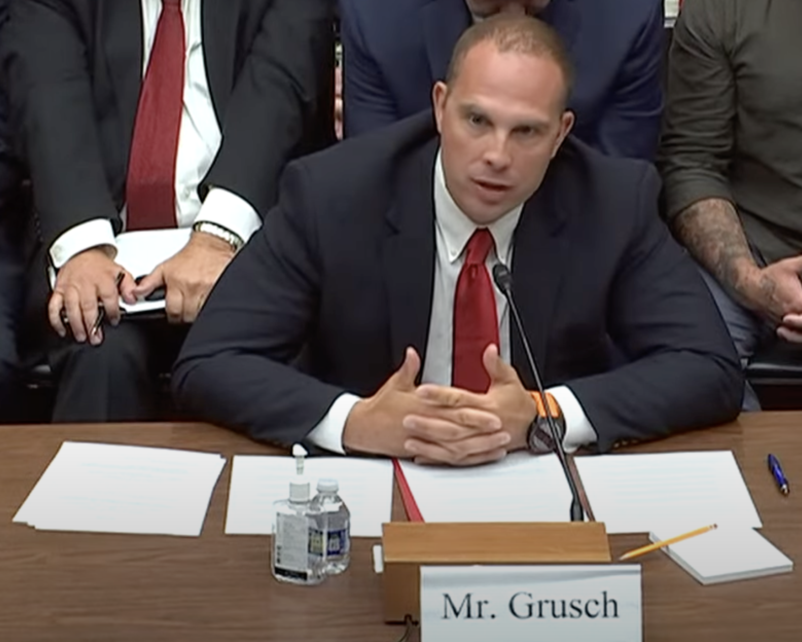
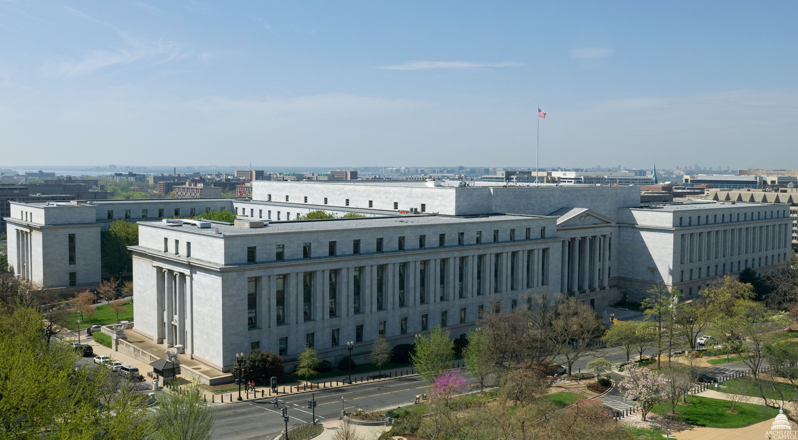

Vorwort: Das UFO-Thema betritt den Kongress
David Grusch ist kein klassischer UFO-Zeuge, der nachts ein Licht am Himmel sah. Genau das macht diese Akte so brisant. Er kommt aus dem Inneren des nationalen Sicherheitsapparats: Air Force, Nachrichtendienst-Umfeld, National Geospatial-Intelligence Agency, National Reconnaissance Office und UAP-Task-Force-Kontext. Als er 2023 öffentlich wurde, änderte sich die Tonlage. Plötzlich ging es nicht mehr nur um Sichtungen — sondern um Programme, Budgets, Whistleblower-Schutz und die Frage, ob selbst der Kongress nicht weiß, was bestimmte Schattenbereiche besitzen.
Am 26. Juli 2023 sitzt Grusch vor dem House Oversight Committee neben Ryan Graves und David Fravor. Graves bringt die Pilotenrealität. Fravor bringt das Tic-Tac. Grusch bringt die Bombe: Aussagen über ein jahrzehntelanges Crash-Retrieval- und Reverse-Engineering-Programm, verborgen vor sauberer demokratischer Kontrolle.

Wer ist David Grusch?
Grusch wird öffentlich als ehemaliger US-Nachrichtendienstoffizier und Veteran beschrieben, der in offiziellen UAP-Untersuchungsstrukturen mitarbeitete. Seine Rolle war nicht: “Ich habe ein Raumschiff gesehen.” Seine Rolle war: “Ich sollte herausfinden, was der Staat über UAP weiß — und stieß laut eigener Aussage auf Programme, zu denen mir der Zugang verwehrt wurde.”
Das ist der Unterschied zwischen einem Zeugenfall und einer Disclosure-Akte. Gruschs Behauptung lebt nicht von einem einzelnen Erlebnis, sondern von einem angeblichen Netzwerk aus Dokumenten, geschützten Aussagen, internen Kanälen und etwa 40 Personen, die er über mehrere Jahre interviewt haben will.
Die Kernbehauptung: Crash Retrievals und Reverse Engineering
Der harte Kern der Akte lautet: Die USA sollen über Jahrzehnte hinweg nicht-menschliche oder nicht-konventionelle Technologie geborgen und untersucht haben. Grusch spricht öffentlich vorsichtiger als viele Schlagzeilen. Er benutzt Begriffe wie UAP, non-human intelligence und “non-human biologics” — nicht einfach plump “Alien-Leichen”. Aber die Implikation bleibt gewaltig.
Er behauptet außerdem, dass Teile dieser Programme außerhalb normaler Aufsicht liefen, mit Verbindungen zu privaten Auftragnehmern, Budget-Verschleierung und einer Kultur der extremen Abschottung. Wenn das stimmt, wäre die UFO-Frage nicht nur eine wissenschaftliche Sensation. Es wäre ein Verfassungsskandal: Wer kontrolliert Programme, von denen selbst gewählte Vertreter angeblich nur Splitter sehen?
Die 40 Zeugen: Das Netzwerk hinter der Aussage
Grusch sagt, seine Angaben basierten auf Informationen von ungefähr 40 Personen über mehrere Jahre. Genau hier liegt die Spannung. Kritiker sagen: vieles sei Hörensagen. Befürworter antworten: Wenn ein Geheimdienstoffizier über offizielle Kanäle Zeugen, Dokumente und Programmnamen an Inspector-General-Stellen weitergibt, ist das nicht einfach Kneipengerede.
In der Disclosure-Szene tauchen Namen wie Karl Nell und Eric Davis als mögliche oder öffentliche Knotenpunkte dieses Zeugen-Netzwerks auf. Vetted und andere UFO-Medien rahmen genau diese zweite Ebene stark: Nicht nur “Grusch behauptet”, sondern “wer wusste was, wer bestätigte was, und wer darf in welchem Rahmen überhaupt reden?”
26. Juli 2023: Die öffentliche Anhörung
Die House-Oversight-Anhörung ist der Moment, in dem die Akte öffentlich greifbar wird. Unter Eid sagt Grusch, es gebe Informationen über Bergungsprogramme, reverse engineering, “non-human biologics” und Repressalien gegen Personen, die darüber berichten wollten. Auf viele konkrete Fragen antwortet er sinngemäß: Das kann ich in einer gesicherten Umgebung nennen.
Und genau das wird zum Symbol dieser ganzen Story: die SCIF-Tür. Öffentlichkeit draußen, klassifizierte Details drinnen. Grusch wirkt nicht wie jemand, der alles auf einer Bühne ausbreiten darf. Er wirkt wie jemand, der ständig an eine unsichtbare Wand stößt.

Nach dem Hearing: Grusch verschwindet nicht
Bro, genau hier kommen die aktuellen Vetted-Quellen rein. Grusch ist nicht einfach ein 2023-Clip, der danach eingefroren wurde. Vetted rahmt seine späteren Auftritte — unter anderem das Jesse-Michaels-Interview und die Space-Symposium-Berichte — als laufende zweite Phase: weniger reine Schockzeile, mehr Systemkritik.
In den neueren Einordnungen geht es um “stovepiping”, Informationssilos, “rice bowls” und die Möglichkeit, dass selbst hochrangige Politiker nur einzelne Puzzleteile sehen. Das ist fast noch unheimlicher als die ursprüngliche Behauptung: Vielleicht liegt das größte Geheimnis nicht in einem Hangar, sondern in einer Architektur, die Wahrheit in so kleine Kompartimente zerlegt, dass niemand mehr das ganze Bild greifen kann.
Jesse Michaels / Vetted: Die Tiefenbohrung
Die Vetted-Seite zum neuen Interview verweist auf Jesse Michaels’ lange Dokumentarform “David Grusch Breaks Silence: Inside Secret UFO Programs”. Für Akte 015 ist das wichtig, weil es Grusch nicht nur als Hearing-Zeugen zeigt, sondern als Figur in einem größeren Disclosure-Netzwerk: Whistleblower-Schutz, Inspector-General-Prozesse, private Auftragnehmer, Zeugenketten, mediale Strategie und politische Blockaden.
Der entscheidende Punkt ist nicht, dass dort jede Aussage automatisch bewiesen wäre. Der Punkt ist: Das Thema bewegt sich weiter. Die Akte lebt. Grusch bleibt ein Knotenpunkt in einem laufenden Ringen um Öffentlichkeit, Beweise, sichere Aussageorte und politische Kontrolle.
Disclosure-Politik: Schumer Amendment und die Frage der Kontrolle
In Vetted-Zusammenfassungen zu Gruschs späteren Aussagen tauchen auch UAP-Disclosure-Act / Schumer-Amendment-Themen auf. Das passt perfekt in diese Akte: Wenn es nichts gibt, warum entstehen dann Gesetzestexte über UAP-Material, Review Boards, Legacy Programs und kontrollierte Offenlegung? Warum kämpfen Teile Washingtons plötzlich um Begriffe, Zugriff und Akten?
Believer-friendly gelesen sieht das aus wie ein System, das nicht mehr sauber schweigen kann. Skeptisch gelesen ist es politischer Druck nach Jahren schlechter Transparenz. In beiden Lesarten ist Grusch der Mann, der die Tür so weit aufgestoßen hat, dass sie nicht mehr ganz zugeht.

Die Gegenseite: AARO, DoD und die offizielle Wand
Die offizielle Seite widerspricht dem spektakulärsten Kern. AARO und DoD erklärten, keine verifizierten Belege für extraterrestrische Reverse-Engineering-Programme gefunden zu haben. Das muss in die Akte, sonst wäre sie unsauber. Aber es beendet die Story nicht automatisch.
Denn Gruschs Behauptung lautet ja gerade, dass die entscheidenden Programme nicht sauber sichtbar, nicht sauber gemeldet und nicht sauber zugänglich seien. Damit entsteht eine perfekte Disclosure-Zwickmühle: Die Regierung sagt “wir finden nichts”; der Whistleblower sagt “ihr schaut nicht dort, wo es versteckt ist — oder dürft dort nicht richtig hinein.”
Timeline
Schlusswort: Wenn er recht hat
Wenn David Grusch falsch liegt, bleibt trotzdem eine massive Frage: Wie konnte eine solche Aussage eines Insiders unter Eid, mit Inspector-General-Bezug und Kongressdruck so weit kommen? Warum bewegt sie Gesetzgeber, Journalisten, Piloten und frühere Regierungsleute?
Wenn er aber recht hat, dann ist das hier nicht einfach ein UFO-Fall. Dann ist Akte 015 die moderne Tür zu einem Jahrhundertskandal: nicht nur “Sind wir allein?”, sondern “Wer wusste es, wer versteckte es, und wer hatte jemals das Recht, der Menschheit diese Antwort wegzuschließen?”